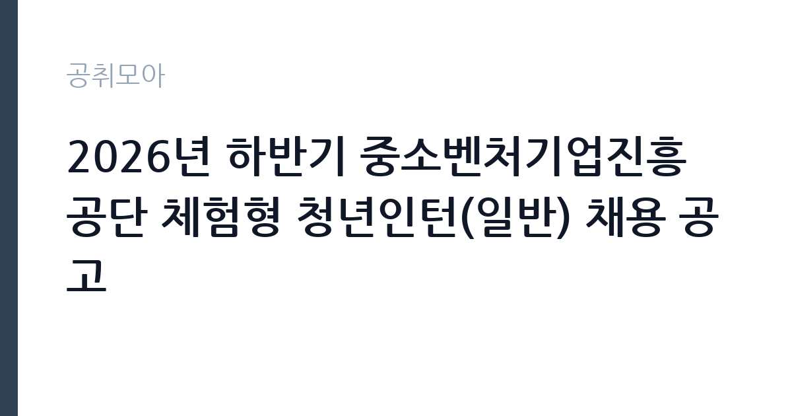

[공공기관] 2026년 하반기 중소벤처기업진흥공단 체험형 청년인턴(일반) 채용 공고
중소벤처기업진흥공단 · 서울 · 마감 2026-11-03 (D-15) · 출처 잡알리오

한눈에 보는 모집 조건
| 기관 | 중소벤처기업진흥공단 |
|---|---|
| 공고명 | 2026년 하반기 중소벤처기업진흥공단 체험형 청년인턴(일반) 채용 공고 |
| 고용형태 | 청년인턴(체험형) |
| 근무지 | 서울 |
| 게시일 | 2026-10-20 |
| 마감일 | 2026-11-03 (D-15) |
지원자격, 이렇게 읽으세요
- 공공기관 채용공시
- 세부 조건은 원문 공고문 확인
응시자격은 다섯 줄로 정리됩니다. 첫째, 임용예정일 기준 만 15세 이상 만 34세 이하. 둘째, 학력·전공·성별 제한 없음. 셋째, 임용예정일인 2026년 12월 29일부터 즉시 근무가 가능한 사람. 넷째, 중진공의 체험형 청년인턴으로 근무한 경험이 없는 사람. 다섯째, 국가공무원법 제33조와 중진공 인사규정상 채용결격사유에 해당하지 않는 사람입니다. 여기서 놓치기 쉬운 것이 셋째와 넷째입니다. 12월 말 임용이므로 2월 졸업 예정자이거나 12월에 다른 일정이 잡힌 분은 일정부터 확인하셔야 합니다. 또 과거에 중진공 체험형 인턴을 했던 이력이 있으면 이번 전형에서는 지원할 수 없습니다. 제대군인은 관련 법에 따라 응시연령 상한이 연장되므로, 군 복무를 마친 30대 중반 지원자는 본인 연령이 연장 대상인지 원문에서 확인하십시오.
이 공고의 포인트
이 인턴의 가치는 두 가지입니다. 첫째, 진입장벽이 낮습니다. 학력과 전공을 보지 않고, 서류에 스펙을 나열할 필요도 없습니다. 둘째, 중진공이라는 기관의 성격상 전국 사업장에서 중소기업 지원 업무를 직접 보게 됩니다. 정책자금, 수출지원, 창업지원 같은 사업이 실제로 어떻게 집행되는지 현장에서 익힐 수 있다는 점은 다른 체험형 인턴과 차별화되는 부분입니다. 다만 체험형 인턴은 정규직 전환을 전제로 하지 않습니다. 공고문에도 근무기간이 정해진 체험형으로 명시돼 있습니다. 경력 공백을 메우고 공공기관 업무 경험을 쌓는 목적으로 접근하는 것이 정확합니다.
전형은 어떻게 진행되나
전형은 서류전형과 면접전형으로 단순하게 구성되는 경우가 많습니다. 서류에서는 응시자격 충족 여부와 자기소개서의 직무 이해도를 보고, 면접에서는 의사소통 능력과 조직 적응력을 확인합니다. 체험형 인턴은 직무 경험을 요구하지 않으므로, 서류에서 중요한 것은 지원 동기와 배우려는 태도입니다. 접수는 공단 채용 사이트에서 온라인으로 이뤄지고, 마감 시각이 지나면 접수 자체가 막힙니다. 마감일 오후에는 접속이 몰리므로 하루 전 제출을 권합니다. 제출 후에는 지원서 수정이 불가능한 경우가 많으니, 최종 제출 전에 입력 내용을 화면 캡처해 두십시오.
원문에서 확인한 전형 방식
- 임용예정일 기준 만 15세 이상 만 34세 이하인 자 * 제대군인에 대해서는 관련 법에 의거 응시연령 상한 연장 - 학력, 전공, 성별 등 제한 없음 - 임용예정일('26.12.29.)부터 즉시 근무가 가능한 자 - 우리 공단의 체험형 청년인턴으로 근무한 경험이 없는 자 - 「국가공무원법」 제33조(결격사유) 및 중진공 인사규정 상 채용결격사유에 해당되지 않는 자 ※ 상세내용 첨부 공고문 참조
이런 분께 추천해요
- 만 34세 이하 청년으로 공공기관 경험을 쌓고 싶은 분 — 학력·전공 제한이 없습니다
- 2026년 12월 29일부터 근무가 가능한 분 — 임용일이 명시돼 있습니다
- 중진공 체험형 인턴 경험이 없는 분 — 경험자는 지원 대상에서 제외됩니다
지원 전 체크리스트
- 임용예정일 기준 나이 요건(만 15~34세)을 충족하는가 — 제대군인은 상한 연장 여부 확인
- 2026-12-29 즉시 근무가 가능한가 — 졸업·타 일정과 겹치지 않는지 점검
- 과거 중진공 체험형 인턴 근무 이력이 없는가
- 마감일 2026-11-03 이전에 온라인 접수를 완료했는가
모집 일정과 제출 타이밍
마감일은 2026-11-03, 임용예정일은 2026-12-29입니다. 접수 기간은 약 2주로 넉넉한 편이지만, 인턴 공고는 마감 직전에 지원이 몰리는 특성이 있습니다. 권장 일정은 첫 주에 자기소개서 초안을 쓰고, 둘째 주 초에 지원서를 제출한 뒤, 남은 기간을 면접 대비에 쓰는 것입니다. 12월 말 임용이므로 최종합격 후에는 신원조회와 결격사유 확인 절차가 진행됩니다. 이 기간에 해외 체류나 장기 여행 일정이 있으면 임용일에 문제가 생길 수 있으니 미리 조정하십시오.
직무 이해하기: 공공기관
중소벤처기업진흥공단은 중소기업의 자금·수출·창업·인력 지원을 총괄하는 기관입니다. 청년인턴은 각 사업부서와 지역본부에 배치되어 실무를 보조합니다. 구체적으로는 정책자금 신청 서류의 형식 요건 확인, 지원 사업 안내 창구 응대, 사업 설명회·교육 운영 지원, 통계와 실적 자료 정리 같은 일이 중심이 됩니다. 단순 심부름이 아니라 공문서 처리 흐름과 사업 집행 절차를 몸으로 익히는 자리입니다. 전국에 본부와 지역본부가 있어 근무지가 배치에 따라 달라질 수 있습니다. 공고문에 근무지가 명시돼 있지 않다면 면접 단계에서 확인하시는 것이 좋습니다.
자기소개서 작성 팁
체험형 인턴 자기소개서에서 가장 흔한 실수는 포부를 길게 쓰는 것입니다. 인턴은 직무 경력을 요구하지 않으므로, 대신 두 가지를 보여주면 됩니다. 첫째, 왜 하필 중소기업 지원 업무인가. 둘째, 배우는 속도가 빠르다는 증거. 첫 문단은 지원 동기를 한 문장으로 끊으십시오. 본론에는 짧은 경험 두 개를 붙이되, 결과보다 과정을 쓰십시오. 예를 들어 아르바이트에서 반복 업무를 정리해 실수를 줄인 경험, 동아리에서 자료를 정리해 공유한 경험 같은 것입니다. 마무리에는 인턴 기간에 배우고 싶은 구체적인 업무를 하나 적으십시오. 정책자금 서류 검토처럼 실제 업무명을 쓰면 진지함이 전달됩니다.
면접 준비 포인트
인턴 면접은 태도 평가의 비중이 큽니다. 자주 나오는 질문은 지원 동기, 인턴 기간에 하고 싶은 일, 갈등 상황 대처, 그리고 마지막으로 하고 싶은 말입니다. 답변은 30초에서 1분으로 끊는 연습을 하십시오. 길게 말하면 핵심이 흐려집니다. 중소기업 지원이라는 주제를 이해하고 있다는 인상을 주려면, 중진공의 대표 사업 이름 하나를 알고 가는 것만으로도 충분합니다. 모르는 질문에는 모른다고 말하고 확인하겠다고 답하는 편이, 아는 척하다 틀리는 것보다 낫습니다. 복장은 단정한 비즈니스 캐주얼 이상으로 맞추십시오.
급여·근무조건 읽는 법
체험형 청년인턴의 보수는 공고문에 별도로 명시됩니다. 과거 중진공 체험형 인턴 모집 사례에서는 월급 157만원 수준으로 공개된 바 있으며, 이는 회차와 근무 조건에 따라 달라질 수 있습니다. 인턴은 정규직이 아니므로 정규직 보수표가 적용되지 않고, 인턴 운영 규정에 따른 월정액이 지급되는 구조입니다. 4대 보험은 근로자 신분에 따라 적용되고, 근무기간이 정해져 있어 계약 종료 시 별도의 퇴직급여가 발생할 수 있습니다. 정확한 월 보수, 근무시간, 수당 포함 여부는 원문 공고문의 처우 항목에서 확인하십시오. 참고로 중진공 정규직의 평균 연봉은 채용정보 플랫폼 기준 4,180만원 수준으로 집계되지만, 이는 인턴 보수와 무관한 수치입니다.
자주 묻는 질문
- 체험형 인턴은 정규직으로 전환되나요?
공고상 체험형 인턴으로, 정규직 전환을 전제로 하지 않습니다. 근무기간이 정해진 계약 형태이므로 경력 형성 목적으로 접근하시는 것이 정확합니다. - 나이 제한이 있나요?
임용예정일 기준 만 15세 이상 만 34세 이하입니다. 제대군인은 관련 법에 따라 응시연령 상한이 연장되니 원문에서 본인 해당 여부를 확인하십시오. - 학력이나 전공 제한이 있나요?
없습니다. 공고문에 학력·전공·성별 제한이 없다고 명시돼 있습니다. 대신 임용예정일부터 즉시 근무가 가능해야 합니다.
함께 보면 좋은 공고
[공공기관] 2026년 제3차 동남권원자력의학원 직원채용 공고 — 마감 2026-11-02[공공기관] 2026년 한국잡월드 정규직 신입(5급) 직원 채용 공고 — 마감 2026-11-04[공공기관] '2026년 ICT활용 종목활성화 지원 사업' 초빙연구원(가) 채용 공고 — 마감 2026-11-03출처: 잡알리오 공개정보를 바탕으로 공취모아가 정리한 안내글입니다. 모집 조건·일정은 변경될 수 있으니 지원 전 반드시 원문 공고문을 확인하세요. 본 글은 정보 제공용이며 합격을 보장하지 않습니다.